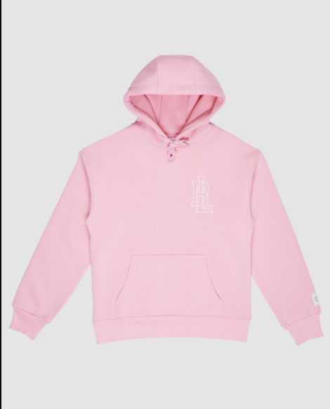
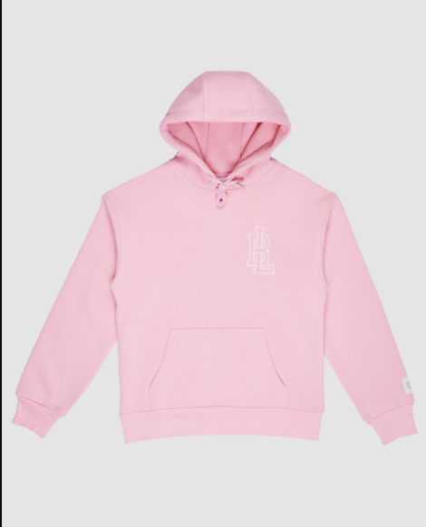
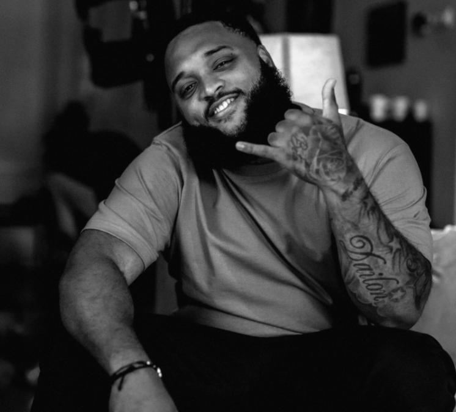

Hoodies
 


HWPO staat letterlijk voor Hard Work Pays Off
Voor de échte Broederliefde volgers zal HWPO in eerste instantie refereren aan de gelijknamige albums die voor de grote doorbraak in de (Nederlandse) muziekscene hebben gezorgd. Met hard werken, nooit aflatende inzet én creativiteit hebben de heren prestaties bereikt die tot dat moment niet voor mogelijk werden gehouden (het langst op nummer 1 staande album -14 weken- met Hard Work Pays Off 2).
Onder de naam HWPO Records en HWPO Publishing zal Broederliefde aanstormende muzikale talenten (die keihard willen werken om hun droom te verwezenlijken) een podium bieden om onder de vleugels van Broederliefde én hun team van specialisten een plek in het muzieklandschap te veroveren en hun volledige potentie te benutten.
 ABOUTBroederliefde
Van jongensdroom naar overdonderend succes
Broederliefde is het unieke verhaal van een vriendengroep uit Spangen die met hun exceptionele mix van hiphop en Caribische dansmuziek Nederland volledig wist te veroveren. Naast talloze awards, gouden/platina platen en (uitverkochte) optredens in o.a. Ahoy en het stadion van Sparta bemachtigde de Rotterdamse groep als kroon op hun CV het Nederlandse record voor het langst op nummer 1 staande album (14 weken) met Hard Work Pays Off 2 (2016).
TOURDATESSnel nieuwe dates!
Upcoming Dates Past DatesNO UPCOMING TOUR DATES